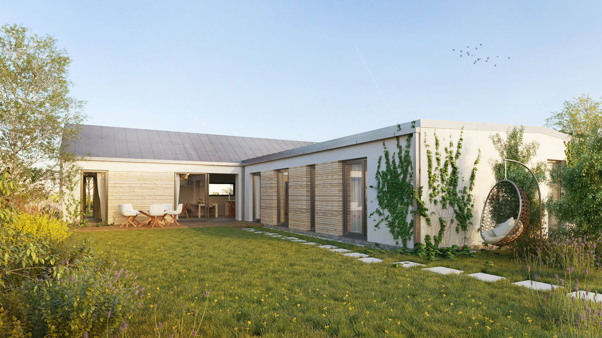
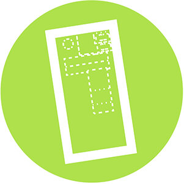

O projektu
Developerský projekt Domky u Riviéry přináší osvědčený koncept výstavby rezidenční čtvrti tvořenou promyšleným urbanistickým řešením úspěšného projektu Domy Nymburk, základem kterého jsou přízemní rodinné domy svěží architektury, pod kterou je podepsán architektonický atelier L.Z.-ATELIER, s.r.o.
Urbanismus
Soused Vás svým domem nepřekvapí – komplexní urbanistické řešení zástavby celé čtvrti s jednotnou koncepcí. Kombinace domů s příčně a podélně orientovanou sedlovou střechou nad hlavním obytným prostorem.
- Zklidněná doprava.
- Záruka kvalitního prostředí.
- Přívětivá proporce ulic – kompletně přízemní zástavba celé čtvrti.
-


- Vaše zahrada je opravdu jenom Vaše – privátní atria zajišťují maximální soukromí.
- Prosluněný interiér – vhodná orientace domů ke světovým stranám.


Architektura
Hlavním motivem interiéru je vzdušnost, velkorysost a propojení se zahradou z obytného prostoru přímo na soukromou terasu. Domy jsou navrženy v třídě B – energeticky velmi úsporné.
- Domky u Riviéry jsou komplexně navrženým celkem ve vysokém standardu provedení, detailně propracovaným projekčním týmem studia L.Z.-ATELIER, s.r.o., které má bohaté zkušenosti jak s developmentem tak s řešením individuálních projektů.


Domy mají promyšlené funkční dispozice ve třech variantách od 135 do 160 m² užitné plochy.
Možnosti realizace
V nabídce je prodej pozemku včetně projektové dokumentace ke stavebnímu povolení i samotné stavební povolení.

- Kupujete pozemek s projektem a se stavebním povolením.
- Kontaktujte nás.
Abychom zajistili Vám i Vašim sousedům příjemný prostor a vyhnuli se překvapením vynalézavostí sousedů, jsou pro území sestavena určitá pravidla pro výstavbu. Nelze měnit urbanistická pravidla pro zástavbu:
- na konkrétním pozemku konkrétní dům,
- odstupy objektů,
- tvary střech a výšku hřebene,
- napojení na infrastrukturu,
- možnosti dalších změn pouze se souhlasem architekta.
Harmonogram
- Výstavba inženýrských sítí vč, komunikace a veřejného osvětlení započata podzim 2022
- Možnost realizace stavby domů 2023
Fotogalerie
Fotografie a video pozemků
Fotogalerie okolí.


Vizualizace projektu Domky u Riviéry
Fotogalerie vizualizací Domků u Riviéry


Fotogalerie realizovaného projektu Domy Nymburk
Podívejte se, jak jsme realizovali I. a II. etapu projektu.